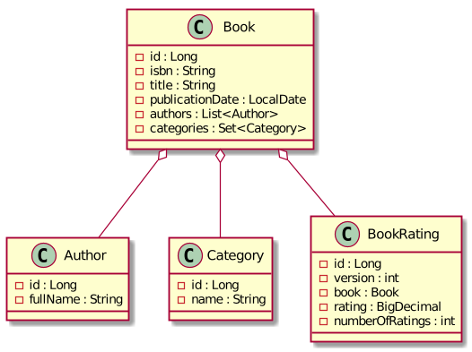

Spring Data JPA Examples
An example of some complicated aspects of Spring Data JPA such as
- fetching strategies of
@OneToManyand@ManyToManycollections - locking strategies
- entity to DTO mapping
Prerequisites
- JDK 11
- Docker at least 1.6.0
How to run tests
To build project and run all tests use command
./gradlew cleanTest test -i
Implementation details
- JDK 11
- Spring Boot 2.2.x
- Spring Data JPA 2.2.x
- MapStruct 1.3.1.Final
- JUnit 5
- Testcontainers
This example has a simple domain model. A book has at least one author and belongs to at least one category. A book can be rated. An average rating and a total number of ratings are tracked.
Simplified UML class diagram

Many-to-many relationship List<Author> authors has javax.persistence.FetchType.EAGER
and many-to-many relationship Set<Category> categories has javax.persistence.FetchType.LAZY.
To demonstrate how different org.hibernate.annotations.FetchModes work
the hierarchy of book classes used:
com.example.spring.data.jpa.entity.AbstractBook-@MappedSuperclasscom.example.spring.data.jpa.entity.Book- no explicit@Fetchcom.example.spring.data.jpa.entity.BookWithFetchModeJoin-@Fetch(JOIN)com.example.spring.data.jpa.entity.BookWithFetchModeSelect-@Fetch(SELECT)com.example.spring.data.jpa.entity.BookWithFetchModeSubselect-@Fetch(SUBSELECT)com.example.spring.data.jpa.entity.BookWithBatchSize-@BatchSizecom.example.spring.data.jpa.entity.BookWithMultipleBags- doesn't extendAbstractBookand hasList<Category> categoriesinstead of Setlike in AbstractBookand its children what leads toMultipleBagFetchException: cannot simultaneously fetch multiple bagswhen both relations are fetched using join.
To demonstrate locking strategies a com.example.spring.data.jpa.entity.BookRating class has @Version int version field.
Actual UML class diagram

Entity-relationship diagram

Test cases
- Fetching strategies
- Entity without explicit
@Fetch-com.example.spring.data.jpa.BookRepositoryTestCrudRepository.findById- Query method
- Query method with
@EntityGraph - Query method with
@EntityGraphandPageable - Query method with
@EntityGraphwith multiple attribute nodes (issue HHH-13740) @Querywith JPQLjoin fetch@Querywith JPQL join fetch and distinct- Custom
@Repositorywith Criteria API query - Custom
@Repositorywith Criteria API query withfetch - Custom
@Repositorywith Criteria API query withfetchanddistinct - Mapping from entity to DTO using MapStruct
- Entity with
@Fetch(JOIN)-com.example.spring.data.jpa.BookWithFetchModeJoinRepositoryTestCrudRepository.findById- Query method
- Entity with
@Fetch(SELECT)-com.example.spring.data.jpa.BookWithFetchModeSelectRepositoryTestCrudRepository.findById- Query method
- Entity with
@Fetch(SUBSELECT)-com.example.spring.data.jpa.BookWithFetchModeSubselectRepositoryTestCrudRepository.findById- Query method
- Entity with
@BatchSize-com.example.spring.data.jpa.BookWithBatchSizeRepositoryTestCrudRepository.findById- Query method
- Entity with multiple bags (two
@ManyToManycollections with typeList) resulting inMultipleBagFetchException-com.example.spring.data.jpa.BookWithMultipleBagsRepositoryTest
- Entity without explicit
- Locking strategies -
com.example.spring.data.jpa.BookRatingRepositoryTest- Implicit optimistic lock of entity with
@Versionon modification - Explicit optimistic lock
@Lock(OPTIMISTIC) - Explicit optimistic lock
@Lock(OPTIMISTIC_FORCE_INCREMENT) - Explicit pessimistic write lock
@Lock(PESSIMISTIC_WRITE) - Explicit pessimistic read lock
@Lock(PESSIMISTIC_READ)
- Implicit optimistic lock of entity with